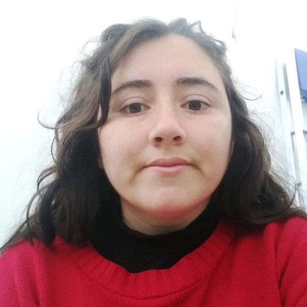

Perfil técnico junior orientado a Backend
Mayra Andrea Bernal

04/08/1994
Zona sur, Buenos Aires, Argentina
 : Bernalmayra94@gmail.com
: Bernalmayra94@gmail.com
: github.com/Bernal-mayra
 : 11 6637 7949
: 11 6637 7949
Soy Mayra Bernal y me considero una pesona que le gusta aprender y mejorar lo que hago.
Desde que termine la secundaria me di cuenta que el paso por ella me dejo herramientas para comprender los programas de edicion o similares. Asi que empece la licenciatura de artes audiovisuales.
Pero hace unos años comenzo a intrigarme otra vez el mundo de la programacion, asi que volvi a buscar estudios y trabajos que esten relacionados.
Por esto comence a trabajar como administradora/gestora en un campus virtual de diferentes institutos. Con ello, espero poder avanzar en mis conocimientos sobre edicion, programacion entre otros.